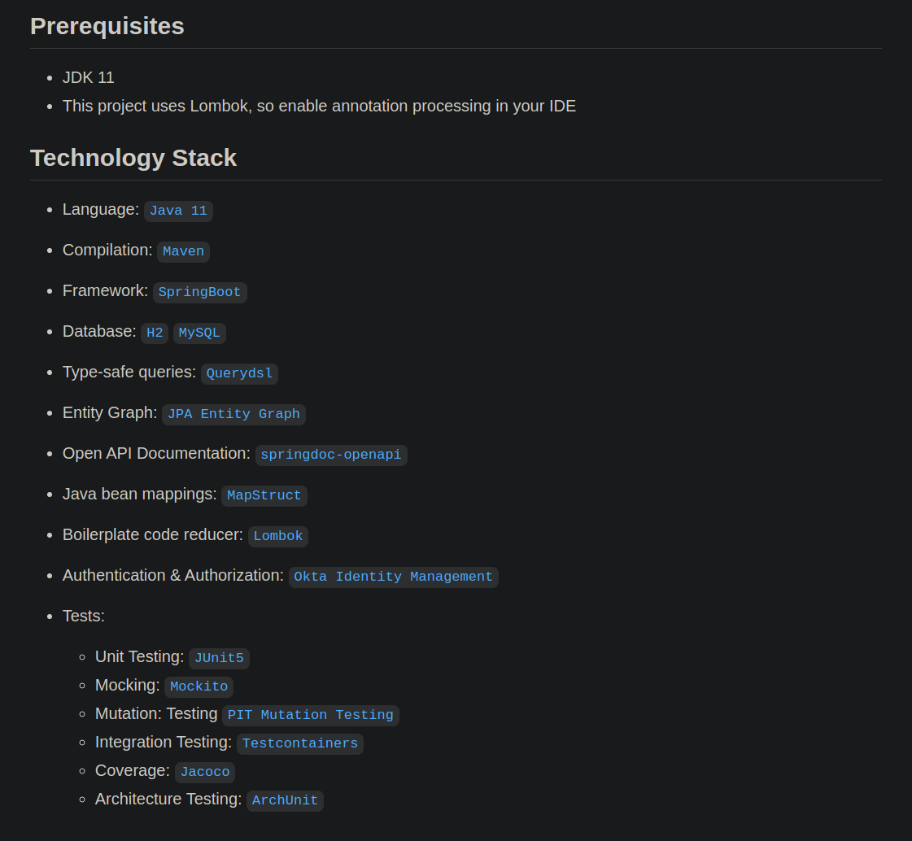
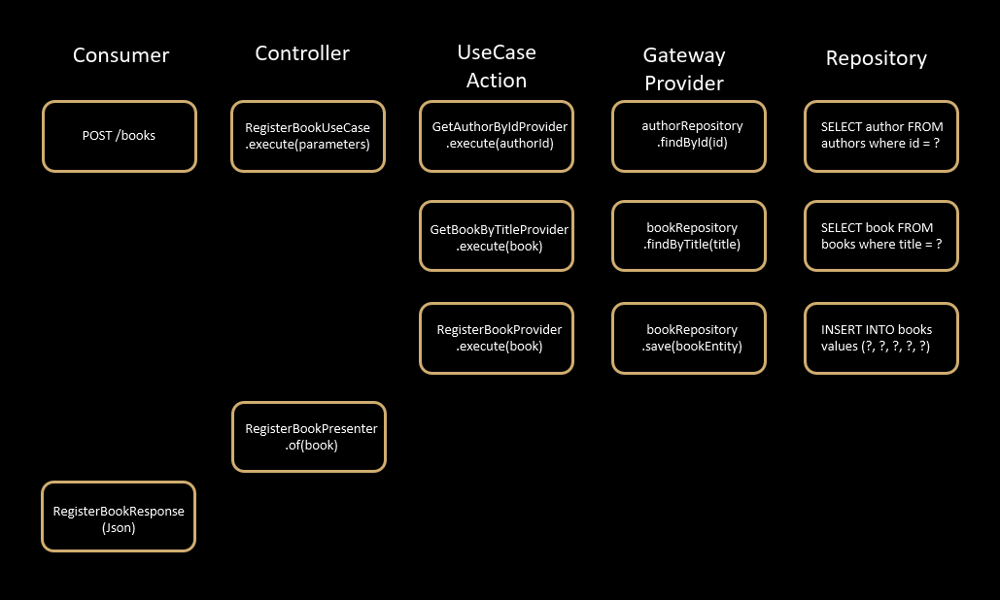
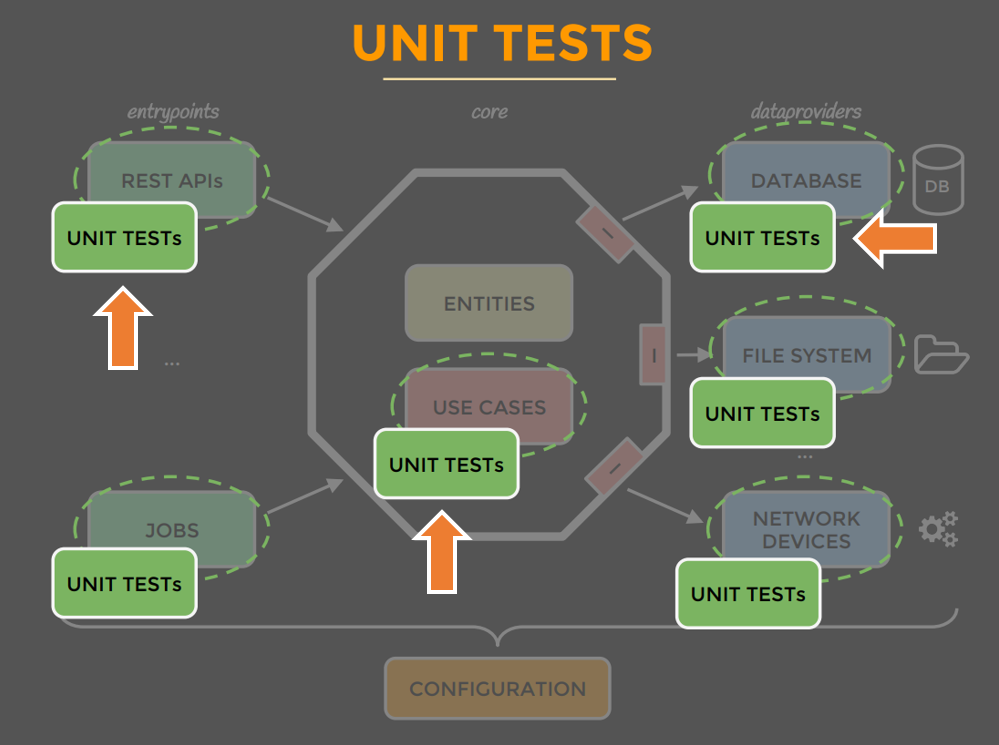
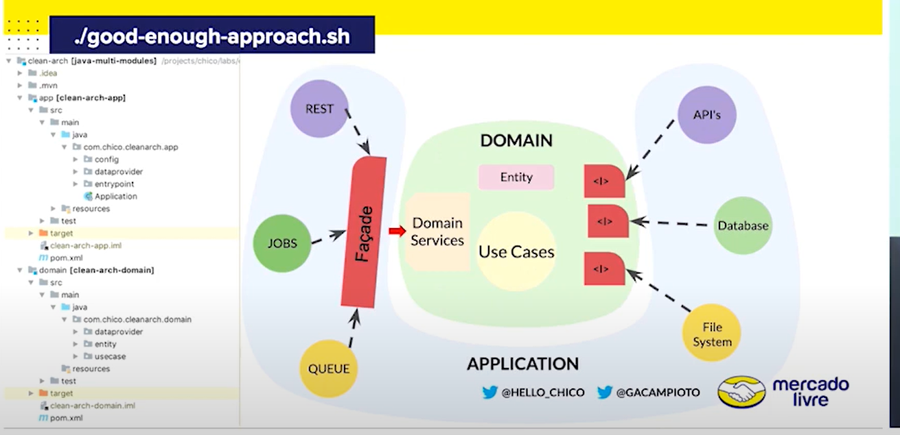
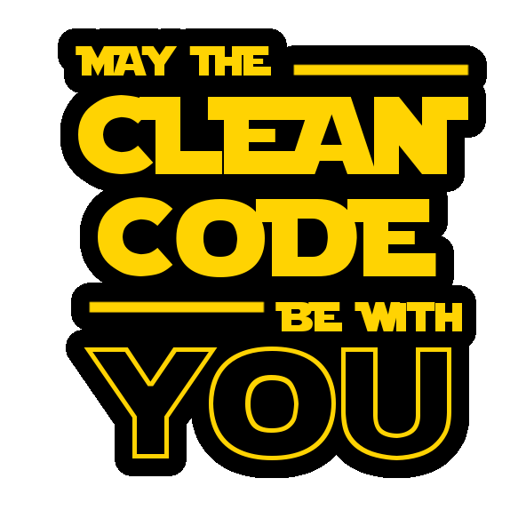

.
├── configuration
│
├── core
│
├── infra
│ ├── amqp
│ ├── sql
│ └── nosql
│
└── entrypoints
└── restClean architecture
Commons Problems
-
Decisions taken too early [e.g. database choice]
-
Centered around frameworks and/or databases
-
Hard to change
-
Business logic is everywhere
-
Hard to find things and measure the impacts
-
Focused on technical aspects
-
Slow, heavy tests
The use case
The center of your application is not the database. Nor is it one or more of the frameworks you may be using. The center of your application is the use cases of your application.
Robert Cecil Martin aka Uncle Bob
The unclebob’s style

Mattia Battiston’s style

The Project

Example Project
Project Structure [Maven Module]
The Flow

Domain
-
Domain objects e.g. "Author", "Book", "BookDocument"
-
Entity-specific business rules e.g. gender format
-
Tiny Types are useful e.g. Gender instead of String
-
No frameworks [Lombok]
Usecase
-
Pure business logic
-
Uses entities and dataproviders
-
Throws business-specific exceptions
-
Not affected by changes in database or presentation
-
Plain Java (no frameworks [except lombok, and hibernate validation])
-
We like single-method interfaces A.k.a. Interface Segregation
[Infra] Provider
-
Implements Interfaces defined by use case e.g. register a book
-
Hides all details about where the data is from
-
Could have multiple implementations e.g. from DB or from File System
-
Uses whatever framework/library is appropriate e.g. spring-jdbc, hibernate, snmp4j, etc.
-
If using ORM, you’d have a new set of entities A.k.a. decoupled from business entities
Entry Point
-
Fires up a use case
-
Has no business logic
-
Has conversion logic e.g. uses DTOs to return result to WEB
-
Hides all details about delivery mechanism
-
GUI would be an entrypoint e.g. controllers would start use cases
-
Uses whatever framework/library is appropriate
Testing Target

Testing Strategy

Test Coverage [42:45]
Unit Tests
-
TDD a.k.a. Tests first, to drive design
-
Cover every little detail a.k.a. Aim for 100% coverage
-
“Dev to dev” documentation a.k.a. What should this class do?
-
Test individual classes in isolation, very fast
Mutation testing
Project Overview
Fitable

Message [1:20:10]
The end
